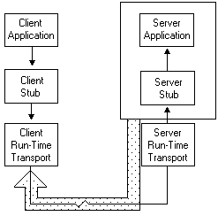

RPC uses the same approach to exception handling as the Windows API.
The RpcTryFinally / RpcFinally / RpcEndFinally structure is equivalent to the Windows try-finally statement. The RPC exception construct RpcTryExcept / RpcExcept / RpcEndExcept is equivalent to the Windows try-except statement.
When you use the RPC exception handlers, your client-side source code is portable. The different RPC header files provided for each platform resolve the RpcTry and RpcExcept macros for each platform. In the Windows environment, these macros map directly to the Windows try-finally and try-except statements. In other environments, these macros map to other platform-specific implementations of exception handlers.
Potential exceptions raised by these structures include the set of error codes returned by the RPC functions with the prefixes RPC_S_ and RPC_X and the set of exceptions returned by Windows. For details, see RPC Return Values.
While the RpcTry and RpcExcept macros provide a customizable platform-agnostic way to handle exceptions, in Windows Vista and later versions of Windows, RpcExceptionFilter is the recommended way of handling exceptions. It does not require custom filters to be written to capture many of the most common structured exceptions; however, custom exception filters still require RpcExcept.
Exceptions that occur in the server application, server stub, and server run-time library (above the transport layer) are propagated to the client. No exceptions are propagated from the server-transport level. The recommended method for a server routine to return errors to the RPC run time is to throw an exception. A server routine can use whatever methods is appropriate for communicating errors between server routines, but if it encounters an error that prevents it from executing the remote procedure, it should raise an exception after cleaning up and before returning to the RPC run time, rather than returning a value to RPC that only the server routine recognizes as an error.
The following figure shows how exceptions are returned from the server to the client.

The RPC exception handlers differ slightly from the Open Software Foundation-Distributed Computing Environment (OSF-DCE) exception-handling macros TRY, FINALLY, and CATCH. Various vendors provide include files that map the OSF-DCE RPC functions to the Microsoft RPC functions, including TRY, CATCH, CATCH_ALL, and ENDTRY. These header files also map the RPC_S_* error codes onto the OSF-DCE exception counterparts, rpc_s_*, and map RPC_X_* error codes to rpc_x_*. For OSF-DCE portability, use these include files. For more information about the RPC exception handlers, see RpcExceptionFilter, RpcExcept, RpcFinally. For more information about the Windows exception handlers, see Structured Exception Handling.
Â
Â